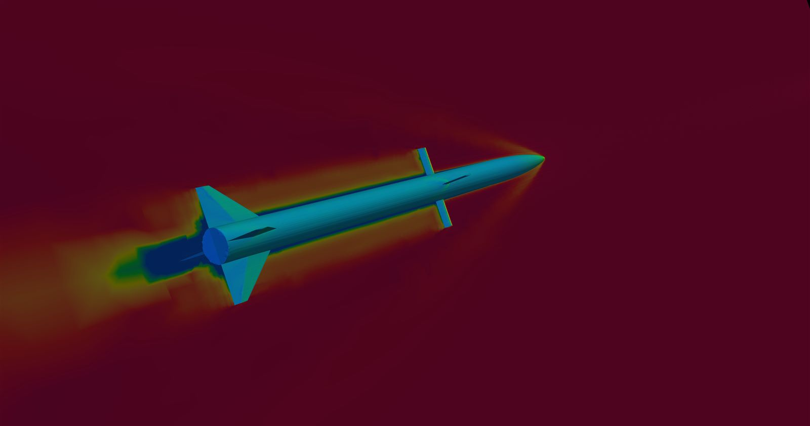
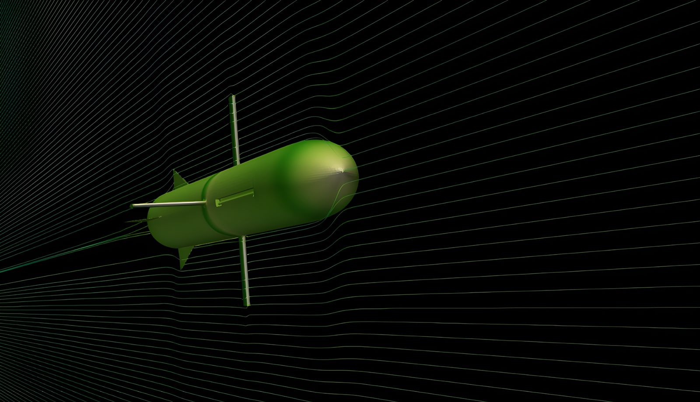

A two-stage boosted missile (nose, fuselage, body fins, booster fins) simulated at a flight condition derived from a custom point-mass ascent trajectory model, using a two-mesh coarse-to-fine workflow to make a 1.2M-cell compressible solve tractable.
Compressible external aerodynamics of a two-stage boosted missile at a supersonic flight condition, targeting a converged drag coefficient and confirmation that the flow field (shock structure, near-zero lift/side-force/moments for an axisymmetric body at zero angle of attack) behaved physically. The flight condition itself wasn't picked arbitrarily — it was read off a custom-built point-mass ascent trajectory model (time-resolved velocity, Mach, altitude, thrust, drag, stage, propellant mass, and stability margin), at roughly 19 seconds into flight, mid-way through first-stage burn.
supersonicFreestream boundary condition. Outlet and side boundaries: inletOutlet for U/T and waveTransmissive for p, a non-reflecting outflow treatment chosen specifically to avoid pressure-wave reflection back into the domain at supersonic speed.hePsiThermo / perfectGas, standard air properties (Cp 1005, μ 1.8×10-5, Pr 0.7).Rather than starting the expensive fine mesh from a uniform freestream and burning through the initial shock-formation transient at full cost, the workflow runs a coarse mesh first, then maps its result onto the fine mesh:
| Coarse mesh | Fine mesh | |
|---|---|---|
| Cells | 175,166 | 1,232,688 |
| Faces | 558,029 | 3,856,056 |
| Fin refinement level | 6 | 8 |
| Timestep | 4×10-7 s | 9×10-8 s |
| End time | 0.03 s | 0.005 s |
A custom coarsemap script reconstructs the coarse case's
latest timestep and runs mapFields -consistent onto the
fine mesh, so the fine mesh inherits an already-established flow field
instead of starting cold. Over half the fine mesh's cells
(611,508 of 1,232,688) sit at the finest refinement level,
concentrated at the fins where the flow gradients are sharpest.
Boundary layers reached 55–86% of target thickness depending on
patch (fuselage lowest, body fins highest) — not fully at target
everywhere, but the mesh still passed all quality checks with zero
illegal faces in the final pass.
sonicFoam (PISO-based compressible solver), Euler time
stepping, bounded/TVD convective schemes appropriate for strong
gradients near shocks and expansion fans. Decomposition used the
scotch method specifically because it minimizes
inter-processor boundaries automatically on complex
snappyHexMesh-generated geometry, run across 12 cores on a single
workstation. The fine-mesh run's fixed 9×10-8 s
timestep, sized for stability at Mach 3.8 through the finest cells,
kept the mean Courant number down around 0.00028 (max 0.364) at the end
of the run.
petsc4Foam, foam2csr,
and amgx4Foam, including patch scripts for known AmgX
integration bugs and single-rank validation tests. Despite that
effort, the production runs use OpenFOAM's native CPU
DILUPBiCGStab solver — no libs entry
for AmgX appears in the shipped controlDict. The GPU
path hit integration friction against this OpenFOAM version's API and
the robust, already-working CPU path was shipped instead of blocking
the result on it. (This is the same underlying GPU-solver
infrastructure that did get fully integrated on the race car
project — see that case study — so the effort wasn't
wasted, just not applicable to this solver in time.)
rhoPimpleFoam (transient PIMPLE with
adjustable local timestepping). The final case moved to
sonicFoam with a fixed, small timestep and explicit PISO
— a robustness/simplicity decision appropriate for a genuinely
supersonic (not merely transonic) flow regime, where the adjustable
local-timestepping approach added complexity without a clear benefit.
Fine-mesh converged coefficients at t = 0.00492102 s (near the 0.005 s end time), reference values ρ∞ = 0.1714, lref = 1.974 m (body length), Aref = 0.0791 m² (frontal area, body diameter ≈ 0.317 m):
| Coefficient | Value |
|---|---|
| Cd (total) | 0.0310 |
| Cd, forward half | 0.0155 |
| Cd, rear half | 0.0155 |
| Cl, Cs, Cm (pitch/roll/yaw) | ≈ 0 (as expected) |
Drag splits almost exactly evenly between the forward and rear halves of the body, and lift/side-force/moment coefficients are all effectively zero — the expected result for an axisymmetric body at zero angle of attack, and a useful sanity check that the simulation setup (mesh symmetry, BCs) isn't introducing spurious asymmetric forces. The time history over the final ~0.0008 s of simulated time shows Cd holding steady at 0.0309–0.0310 with only small (±0.0002) oscillation — a well-converged estimate, not a single noisy snapshot.

